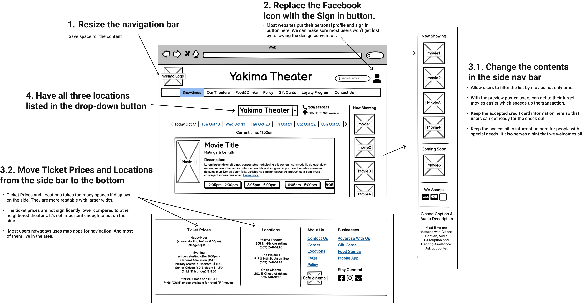
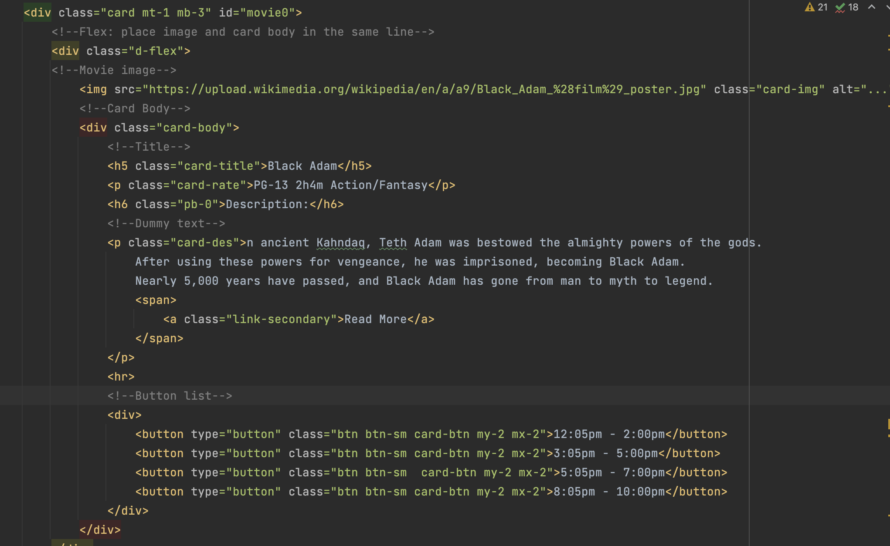
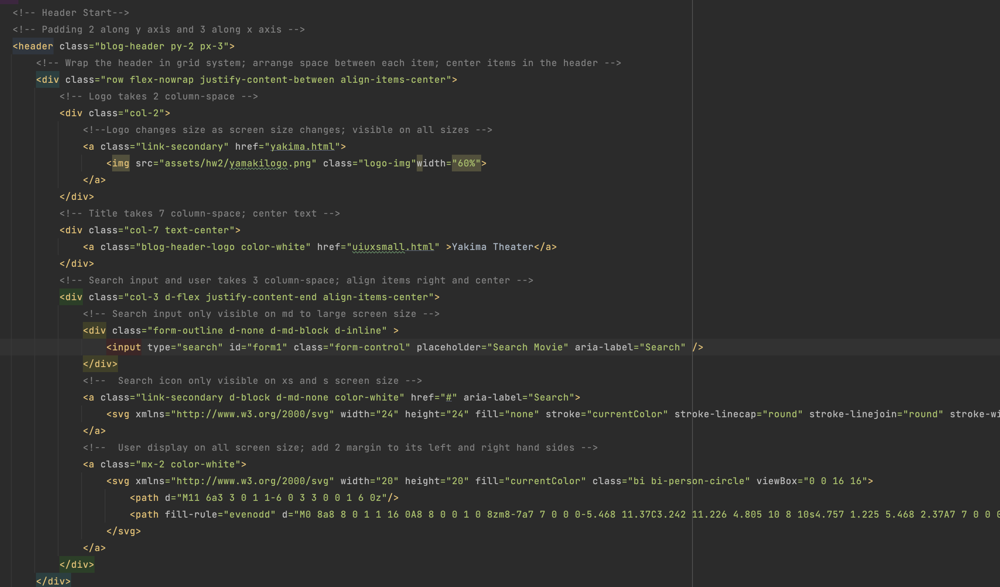
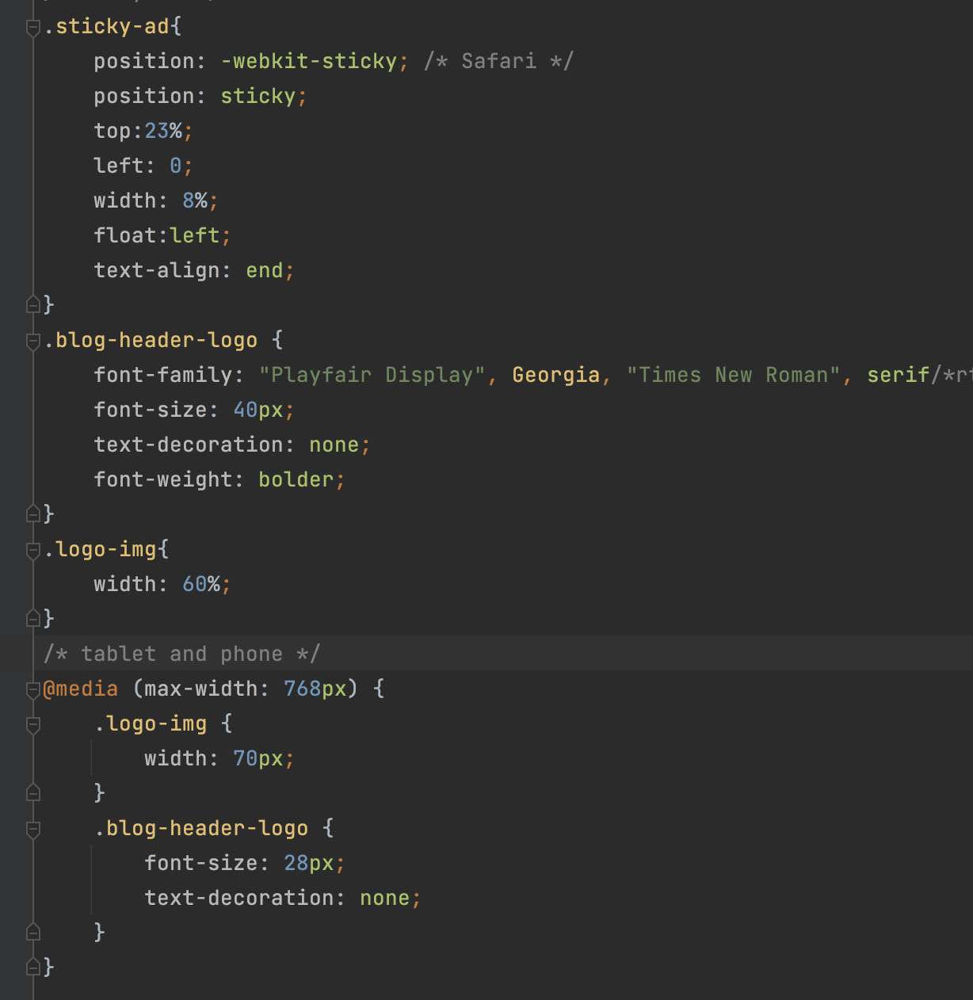

Redesign for Yakima Theater
Overview
Why Yakima Theater?
The website I have chosen to redesign is Yakima Theatre's official website. Yakima Theatres is a family-owned chain of movie theaters in Washington state. The theater has been there since 1912 and survived the pandemic. It is my favourite movie theater to visit whenever I am in the area. They have a great staff and nice environment but their website is unattractive and poorly designed. I believe their business could profit from a redesigned website. Link to the web
Problems
- Navigation bar took too much space on the page
- Sign in button and social media logo are placed in unconventional locations
- Some information on the right hand side are not important
- It's unclear to a first time users that they have 3 locations
- The colors do not have strong contrast with each other
Visual

- Their logo on the top banner uses so much space that users must scroll down to view any content.
- There is no padding around the "Please Choose Location" button.
- There is no line or color to delineate each menu option.
- The Facebook logo and "sign in" button are placed in unconventional locations. Users might have trouble finding them.
- The yellow color does not have strong contrast with the blue color or the white color. It is hard to see words written in the yellow color.
- The information on the right hand side uses too much space.
Usability, Learnability and etc
- There are three different locations for Yakima Theatres but each has a different name. A first-time user may not understand what each one is.
- Users can only choose two of the three locations under the "Please Choose Location" button. The thrid location has its own website which can be navigated to using a button in the right sidebar.
- It is not clear what time a particular movie showing ends.
- The "Choose Location" button is too close to the "Showtimes" button, making it hard to click.
- The "Choose Location" button and the "Showtimes" button do not synchronize when a location is selected.
- It is not clear what users should search for in the search bar.
- The purpose of the "Theater Info" section is not clear. Users would likely expect to find locations, pictures of the theaters, and other such content, but the page only contains rules and instructions for purchasing tickets.
WAVE: A Web Accessibility Evaluation Tool

- Missing first level heading on their home page
- Redundant link in email sign-up section
- The empty link is an error in their code but not shown on the page. There is no button or text that allows user to click on the empty link on their website.
To better understand the website's problem, I use WAVE to test the accessibility. I agree to most of its findings. Some same errors are already identified in the previous section. WAVE helps me find 1 errors and 1 warning I didn't notice earlier.
There is one error that don't really show on the page but in their code
Solving problems in my Low-Fidelity Prototype

Lo-fi for Desktop Layout:

Lo-fi for Mobile Layout:

Lo-fi for Tablet Layout:

Visual Design Guide
Based on their logo, I envisioned the website to have the same blue and yellow color theme. After researching other movie web services, I settled on the dark blue as the ideal theme color. The dark color helps users recall their experience in the theater.

High-Fidelity Prototype
The annotations are the corresponding HTML elements.

Responsive Webpage Implementation
I wrote the HTML code with styling in Bootstrap5 for my redesigned website. Feel free to change the width of your browser to see how the web app react to the changes. Click me Or copy link here: https://azj00.github.io/yakima.html
(You can click on the large "Yakima Theater" heading to exit)
Known Error: It takes time for the server to respond. Do not refresh or resize the screen too quickly or large blank space between the navbar and the main content will appear. View on Chrome for the best user experience.
Local Host Desktop View (Chrome)

Responsive Check: tablet (Chrome-ipad air)

Responsive Check: mobile (Chrome-iphone XR)

Code Snippets
Movie card implementation
Header implementation with responsive behavior to all screen sizes
 Conclusion & Takeaways
From this project, I learned that it's really important to do user testing before launching the product. I found it easier to find the flaws in the app-flow and usability problems when I'm a user. Even though designers designed the interface in users' shoes, it's still hard to make it perfect.
I also found it helpful to think about what code I should use when I make my hi-fi prototype. With my css notes on hi-fi, I was able to develop my code quick and neat.
← All Projects